CM.com Circuit Zandvoort is niet alleen bekend vanwege haar legendarische races en fantastische sfeer, ook wordt de Zandvoortse racepiste geroemd door haar unieke ligging. Met het strand vlakbij en een droomparcours in de Zandvoortse duinen, is het een feest voor elke racefan om een bezoek te brengen aan CM.com Circuit Zandvoort.

HET CIRCUIT.


ONTDEK HET CIRCUIT.
Met een circuitlengte van 4,3 kilometer is het een van de kortere circuits op de F1-kalender: bijna nergens anders racen coureurs zo vaak aan de racefans voorbij! Hier vind je geen eindeloze uitloopstroken van asfalt, enkel meedogenloze grindbakken. Ieder foutje op het circuit wordt afgestraft. Het uiterst uitdagende circuit telt 14 bochten en zal helemaal geüpgraded worden naar de hoogste standaarden. Hierbij blijft het unieke karakter van CM.com Circuit Zandvoort gehandhaafd.